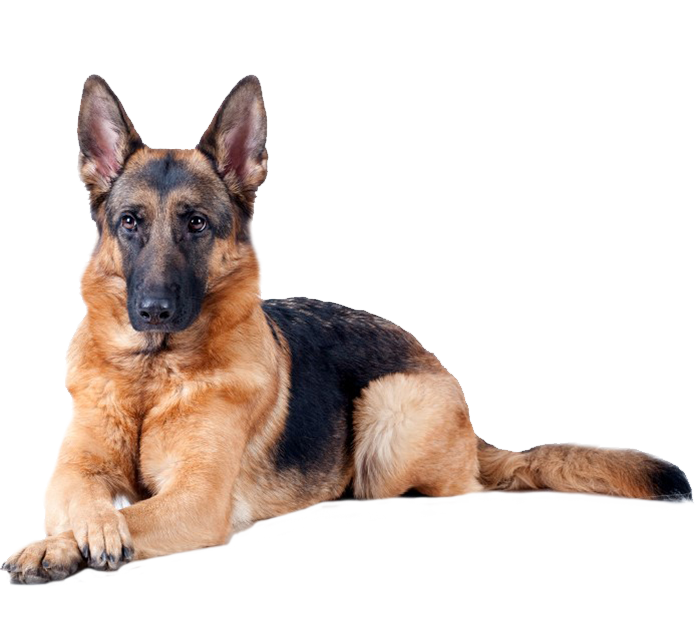

Adopta ¡Ganamos todos!
¡Gracias por pensar en adoptar en el refugio! Nuestro objetivo principal es poder encontrarles un hogar permanente lleno de amor a cada una de las mascotas de nuestro refugio.
A través de la historia, las mascotas han sido grandes compañeras de la vida de las personas, compartiendo alegrías, pero también ayudando a superar momentos difíciles.
Conoce a nuestros huespedes

Perros
Quiero verlos